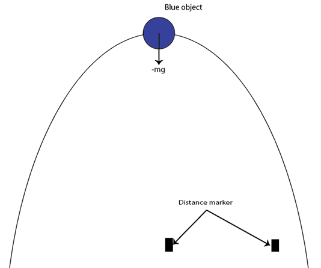

In this lab report, our goal was to explore two important physical concepts. We first looked at the path of a projectile to confirm its shape and to appreciate how good the kinematic equation is at predicting that path. We then looked at the angle of an inclined plane, which allows a rolling ball to cross a set distance the fastest. With these experiments, we were able to conclude the following:
A projectile does follow a parabola path; the kinematic equation is an amazing tool to evaluate the position of that projectile at any given time.
For the rolling ball to move across a distance D the fastest, we need to set the incline at an angle of 45˚.
Introduction
This week's lab is divided into two parts. The first examined the path taken by a projectile. To do so, we recorded a video of a projectile, plotted the graph of time Vs height of that projectile, analyzed its shape, and compared it to what the kinematic equation would predict. In the second part, we conducted a series of experiments that allowed us to extract the speed at which an object moves across a distance D when the angle of the incline is varied. From this experiment, we aimed to find what angle of the plane allows the moving object to cross a distance D the fastest. In the end, we will compare our results to what physics would predict.
Method
Part I: Projectile motion
The videos:
For this part of the lab, we recorded videos of projectile motion and used programming to extract relevant information and help us with our experiments. Many aspects of the video were tuned in a way that would allow us to have a high-quality data to conduct our studies:
Videos were taken at 60FPS for improved accuracy (more data points per second).
The room was well lit so our program can pick the location of the moving ball accurately
The camera was set to be parallel to the plane of the moving ball.
The moving object:
For this lab, we had to compute the position of the projectile using programming. To make the objects easily identifiable by our code, we picked one of the primary colors in the RGB color system and ensured that only the object bore that color in the video recorded. The color blue identified by the triplet (0,0,255) in the RGB system was picked. The object that we observed was chosen based on that specific color component.
Distances in the Video
To measure real-life distances in the video, we needed reference points within the video. We achieved this by converting the pixel distance between two points in the video to a real-life distance (centimeters, kilometers, or miles). We placed two position markers at a known distance from each other (as shown in figure 1) and used the ratio of pixels per centimeter to calculate the actual distance.

"Schematic of the setup of our planes. A position marker should be made available for our program to recognize real-life measurements."
The Code
To proceed with our project, we have acquired videos and developed a mechanism to identify the objects present in these videos. Our next step is to instruct the computer to identify and return the center position of any large objects that appear to be of blue color.
We know that the color of a pixel is determined by a combination of three primary colors: red, green, and blue, with each color component being represented by an integer value ranging from 0 to 255. We can calculate the average value of these color components for any pixel, and this average value will always be less than 255 unless the pixel is black (represented by 250, 250, 250), which is unlikely in our videos. By subtracting this average value from the original color value, we can emphasize blue in the image. We can now establish a threshold to specify how blue we want to pick in the video. With that new data structure, we can mask anything that is not blue, compute the position (in pixels) of the center of any big blue region of each video frame, and convert that position in centimeters. With that list of positions, we can make all the calculations we need to understand the motion of a projectile.
Part II: incline angle
For this part of the lab, our goal was simple: we needed to identify what angle of an inclined plane would allow our racket ball to move across a distance D the fastest. Our process was also simple: we recorded the time it took the racket ball to complete the trip for as many angles as possible and picked the angle corresponding to the shortest travel time. Using a blue racket ball and the same method described in Part I, we were able to tell our code to start counting frames when the ball starts moving and stop counting frames when the ball travels a distance D from the origin. The total time of the event is then the number of frames counted multiplied by one sixtieth of a second. That process will then allow us to find the speed corresponding to each angle.
Theory
Part I: Projectile motion
In this part of the lab, we wanted to showcase the parabola shape of paths taken by projectiles and determine how good the kinematic equation predicts their motion.
If f(n) is a plot of the position of that projectile in space, to say that the path taken by a projectile is a parabola implies that:
∃!a,b,c∈R⁄(for all n,f(n) )=an^2+bn+C
As for a second exploration of projectile motion, we know that the kinematic equation can be used to predict some aspect of the event. The initial horizontal velocity can be used to predict the horizontal displacement of the projectile at any time t.
Δx=ν_ix t
The initial vertical velocity and the acceleration due to gravity can be used to predict the height of the projectile (measured from starting point) at any time t.
Δy=-1/2 gt^2+v_iy*t
Notice that we can consider the fact that in our everyday life, an object will eventually cease to fall. Therefore Δy is a constant and that will put a restriction on what value of time t makes sense.
Sample calculations
Part I: Projectile motion
For our study of the shape of a projectile path, we need to find parameters of a parabola that will approximate that path as accurately as possible. Using the code that plotted the position of the projectile in space (Graph 1), we obtained that the max height (or variation of height) is about 108.896 cm. That event happened when the projectile was 118.2 cm away from its starting position (horizontal distance). Using that fact and picking a random point on the plot, we obtained through that the parabola that will best approximate the path taken by the projectile is:
p(x)=-0.036〖97(x-118.2)〗^2+108.896
When drawn on the same graph as our plot we obtain a very close match (see Graph 2).
As for the kinetic equations, we can use them to predict where the projectile will be located at a time t. From Graph 3, we could extract the initial horizontal velocity of the projectile. We will assume that the velocity displayed at the beginning is the most accurate. Therefore, from the kinetic equation, the horizontal displacement at any time t is given by:
Δx=100t cm
Therefore, at the end of the video at time t =0.979s, the horizontal displacement of the projectile will be approximately:
Δx=100*0.979cm
Δx=97.9cm
If we look at graph 1, the horizontal displacement should be:
Δx=168.54cm – 65.98cm = 102.56 cm
The kinematic equation describes well enough what has happened (about 5cm of difference).
We can also use the kinematic equation to calculate the vertical displacement at any time, using the fact that from graph 4, the initial vertical velocity is approximately 4m/s. Therefore, the vertical displacement in function of the time is:
Δy=-1/2(9.81)t^2+4t
We can test that equation since we know that the maximum height of the projectile was about 108.896cm and happened at t=0.4 seconds. By inputting the time in our equation, we obtain:
Δy=0.8152m or 81.5m
The result of the kinetic equation predicted the maximum height with a difference of about 28cm (when compared to the plot generated by the program). It’s less accurate than the horizontal displacement prediction, which could be explained by a tilt of the camera when the video was being recorded.
Conclusion and Discussion
Part I: Projectile motion
With our study of the path of a projectile, we were able to confirm that for any given plot of a projectile's position (relative to a vertical and a horizontal), we could find a parabola that closely matches that plot. We can use our conventional vertex equation of a second-degree polynomial to find that parabola. Therefore, it is true that the shape of a projectile's path is a parabola.
Using the kinematic equation, we were able to correctly predict the horizontal displacement of the projectile from where it started. However, due to some inaccuracy that occurred in determining the vertical initial velocity of the projectile motion, our original plot overestimated the vertical displacement as predicted by the kinematic equation.
Part II: incline angle
After a careful analysis of how varying the angle of an inclined plane varies the time taken by our rolling object, we noticed that there is an angle at which that time is minimal. Both our empirical study and the theory showcased in the present document confirm that this angle is 45 degrees or pi/2 radians (Graph 5). When the angle is less than 45˚, the path taken is short, but a lower acceleration of the racket ball is accompanied by that shorter path. When the angle is greater than 45˚, the acceleration of the object is huge, but that greater acceleration is accompanied by a longer travel path. 45˚ seems to be the limit, where both the angle and the travel path are rightly tuned for a shorter travel time.
Errors
For the most part, as far as the experiments of this lab is concerned, the measurements made were interestingly accurate. However, we can highlight the following factors as eventual sources of errors:
The tilt of the camera: could cause an overestimation if the paths recorded are elongated (Other method of position tracking could help).
Air resistance: could cause an underestimation of the speed of our racket ball (to take air resistance into account in our measurements could help)
Reaction time when using a stopwatch: could result in either an overestimation or an underestimation (taking multiple measurement does help reduce that inaccuracy).
addendum
I started building the web page by putting the necessary basic HTML elements, like Doctype, HTML, head, and body tags. I then set the title of the page in the title element inside the head element. The element 'body' of my code will contain all the text that will show on the browser windows. Since I knew the general structure of my page, I immediately included all the main HTML elements that would house sections of the website. My web page includes:
A navigation section.
The main content of the page (a physics report).
The addendum that explains my HTML element choices.
Navigation section is where I want to have a navigation bar that will allow the user to click on links that take the browser windows straight to a specific section of the Document. For semantic purposes, I used the element 'nav' to house a list that functions like a table of contents for the chosen document. With the help of the element 'anchor,' I then established a link between each title and its respective section.
To house the main text of my document and the addendum, I chose the HTML element named 'article'; one article for each of them, respectively. From there, it was all about hierarchy and picking elements that also handled the meaning of the text it housed. For the title of the document, I used the higher title element heading level 1, which will help in the proper indexation of the web page by search engines. From there, I used heading level 2 for the titles of sections and heading level 3 for the titles of parts of sections.